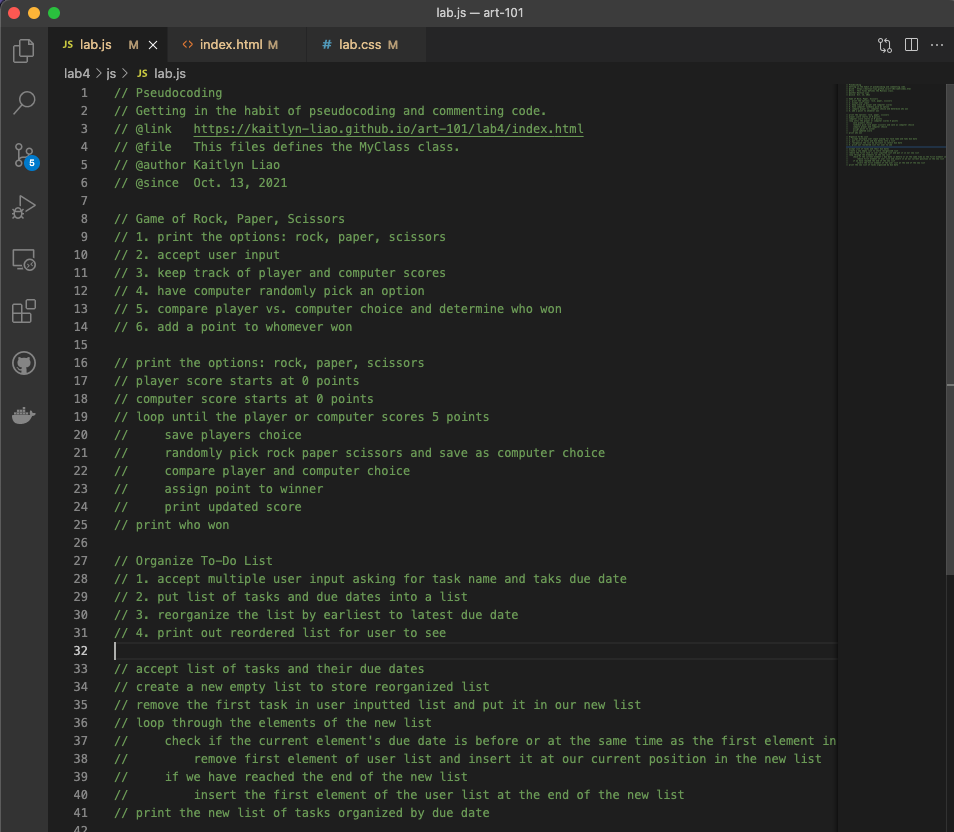
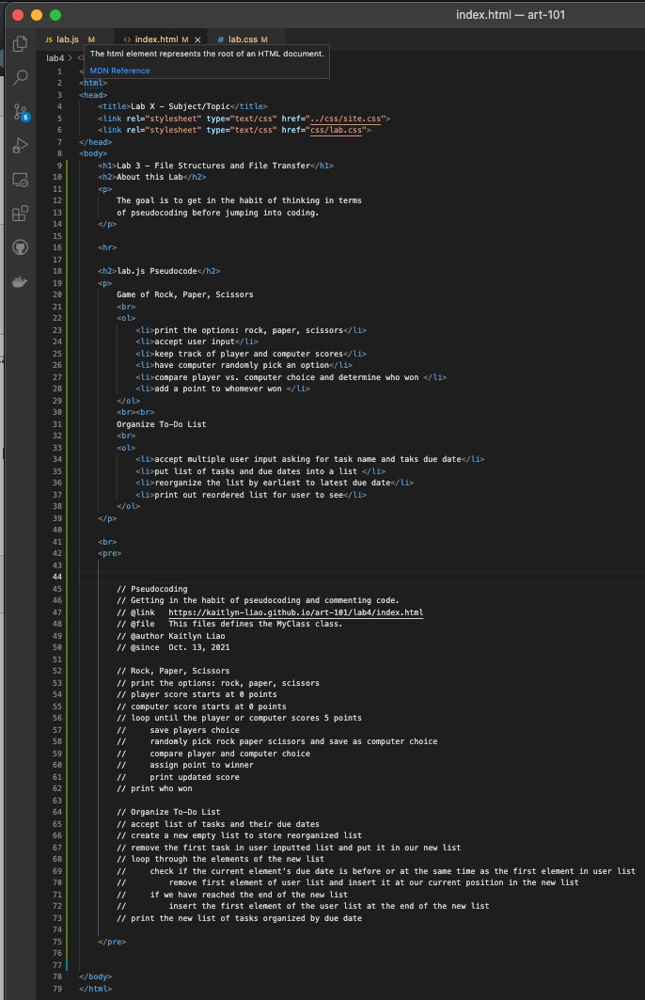
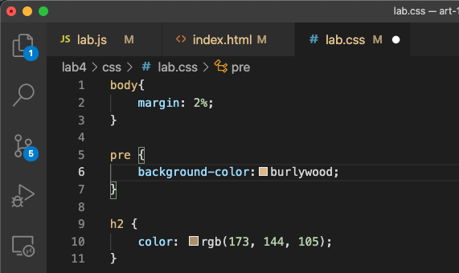

The goal is to get in the habit of thinking in terms of pseudocoding before jumping into coding.
Making Cereal
Game of Rock, Paper, Scissors
// Pseudocoding // Getting in the habit of pseudocoding and commenting code. // @link https://kaitlyn-liao.github.io/art-101/lab4/index.html // @file This files defines the MyClass class. // @author Kaitlyn Liao // @since Oct. 13, 2021 // Making Cereal // 1. Get a bowl, milk, and your choice of cereal // 2. Open the the cereal box and pour desired amount into the bowl // 3. Open milk carton and pour just enough to almost cover the cereal in the bowl // 4. Close up the cereal box and milk carton // 5. Eat with a spoon // Rock, Paper, Scissors // print the options: rock, paper, scissors // player score starts at 0 points // computer score starts at 0 points // loop until the player or computer scores 5 points // save players choice // randomly pick rock paper scissors and save as computer choice // compare player and computer choice // assign point to winner // print updated score // print who won // Organize To-Do List // accept list of tasks and their due dates // create a new empty list to store reorganized list // remove the first task in user inputted list and put it in our new list // loop through the elements of the new list // check if the current element's due date is before or at the same time as the first element in user list // remove first element of user list and insert it at our current position in the new list // if we have reached the end of the new list // insert the first element of the user list at the end of the new list // print the new list of tasks organized by due date
Here are screenshots of my source code
  